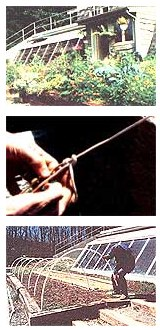

TOP to BOTTOM: The beautiful result! Vegetables, herbs, and flowers out of season. The slipknot that tethers the gathered plastic to the stake is an easily adjusted double hitch. ""PVC"" ribs are bent into shape and slipped over rebar posts.